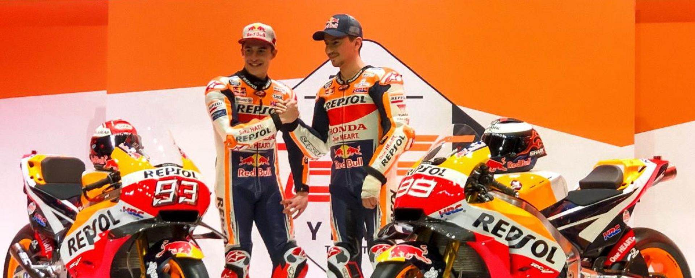
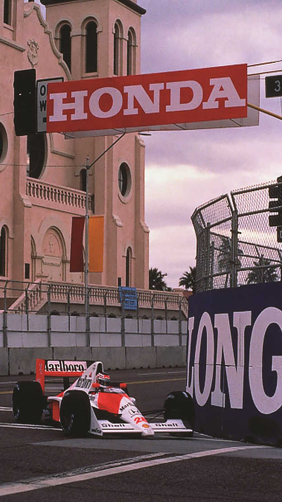

Moto GP

formule 1

Hoda begon maakte in 1964 zijn entree met de Honda RA271 in de Duitse Grand Prix en werd met elke race een sterkere concurrent. Het seizoen van 1965 leek meer
dieptepunten dan hoogtepunten te hebben, totdat Richie Ginther, die achter het stuur zat van de RA272, de eerste overwinning behaalde in Mexico.
Na een afwezigheid van 15 jaar kwam honda terug in 1983 in de F1 als motorleverancier. Tijdens de laatste race van dat seizoen werd Keke Rosberg
met Williams Honda vijfde. Een jaar later won hij de eerste race. Honda behaalden hun eerste F1-wereldkampioenschapstitel met
Nelson Piquet in een Williams in 1987. In die tijd leverden honda ook motoren aan Team Lotus met de veelbelovende coureur Ayrton Senna. in de Britse Grand
Prix van dat jaar finishten auto's met een Honda-motor als eerste, tweede, derde en vierde.
In 1988 ging honda in partnerschap met McLaren en wonnen ze 15 van de 16 races, met de titel voor Ayrton Senna. Alain Prost won het kampioenschap met McLaren
Honda in 1989, waarna Ayrton de honda motoren naar de winst reed in zowel 1990 als 1991.
In 2016 kwam honda weer terug als leverancier voor redbull en alpha tauri met Max vertstappen en alex albon bij redbull en pierre gasly en daniil kvyat bij alphatauri.
In 2021 e 2022 won max het kampienschap met redbull.